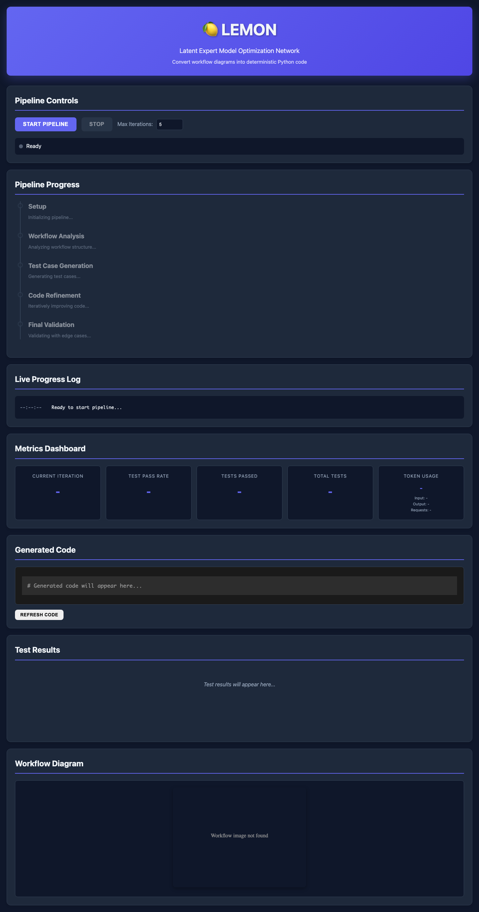
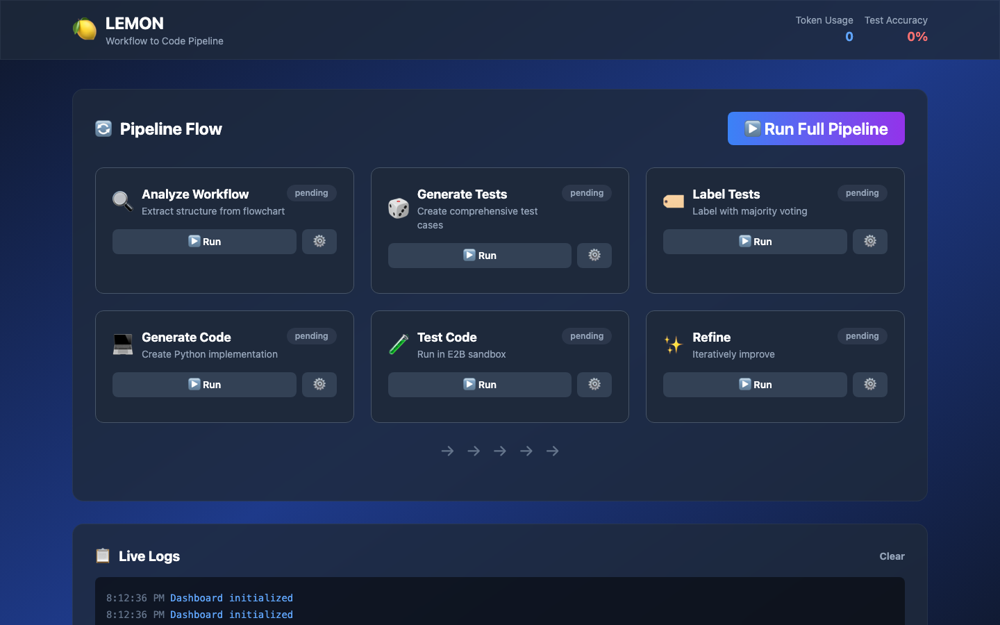
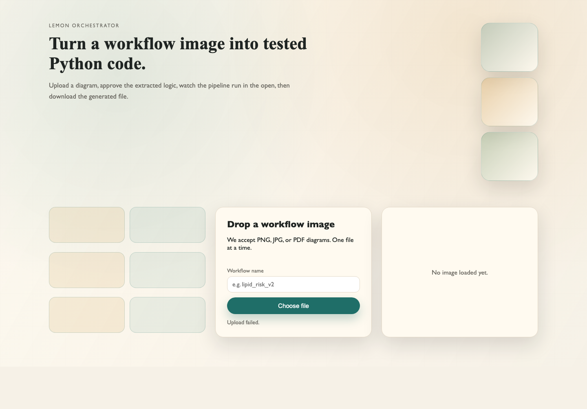
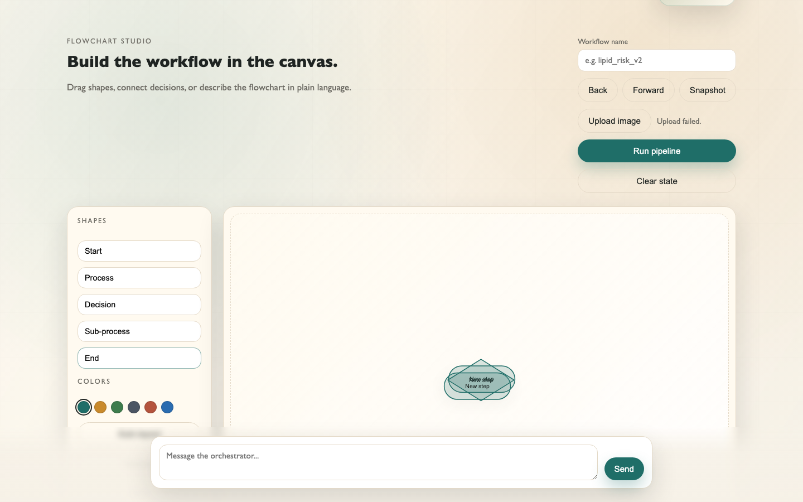
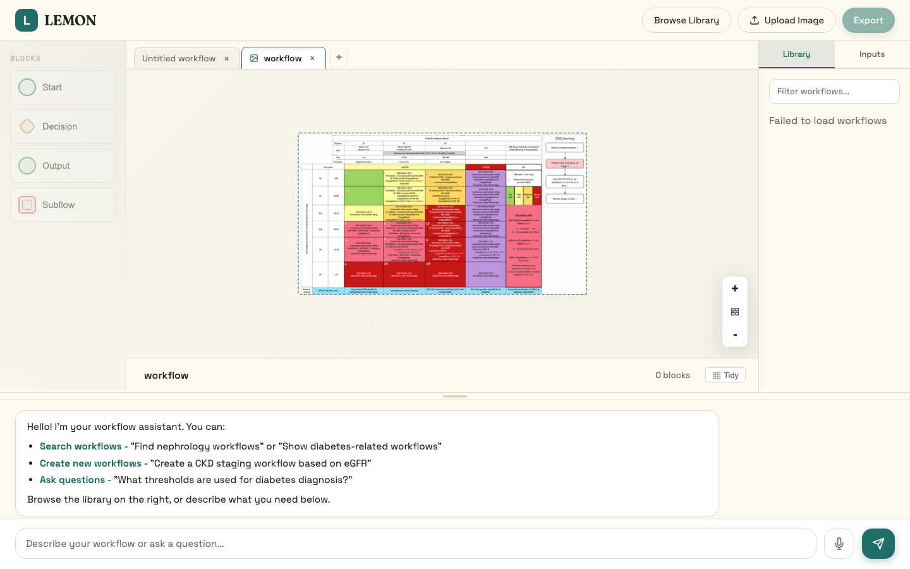
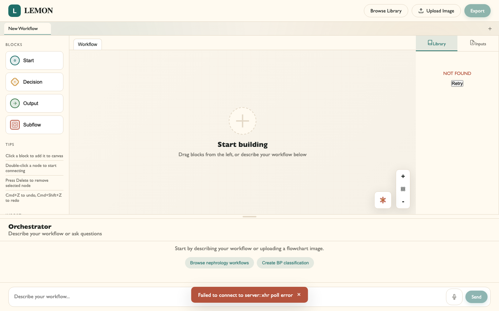

As the LLM builds a workflow, nodes and connections appear on the canvas in real time. Users can watch the workflow take shape as each tool call executes, rather than waiting for the whole response to finish.
Users can drag nodes around, draw connections between them, and right-click to get context menus. The canvas is fully interactive, not just a read-only preview of what the LLM built.
The chat panel streams LLM responses and shows each tool call as it runs. During stepped execution, the active node lights up on the canvas and the execution path is traced, so you can always see where the system is and what it's doing.
The main way to use LEMON is just to type what you want. The canvas and sidebar show what's happening visually, but the core interaction is a chat conversation.
Undo and redo work on the canvas, you can cancel LLM tasks mid-way, and refreshing the page doesn't lose your work. Making mistakes is cheap, which encourages users to experiment.
Every node type uses the same visual language (coloured shapes on the canvas), and editing always works the same way: either type in the chat or click on the canvas directly. There's one way of doing things, not different modes for different parts of the app.
The frontend went through six distinct iterations as we refined the interaction model. Early versions treated the tool as a pipeline dashboard; later iterations shifted toward a canvas-based workflow builder with an LLM chat assistant.
Before building the first prototypes, we sketched out two candidate layouts to explore how users would interact with the pipeline. The first treated the system as a vertical, linear pipeline; the second broke stages into independent cards.
Below are representative screenshots from each major iteration.
The first prototype used a dark theme and presented the system as a linear pipeline. Users could start/stop execution and watch progress through discrete stages (setup, workflow analysis, test case generation, code refinement, final validation). A metrics dashboard and code output panel sat below.

The second iteration broke the pipeline into individually runnable cards arranged in a two-row grid. Each stage (Analyze Workflow, Generate Tests, Label Tests, Generate Code, Test Code, Refine) could be triggered independently, giving users more control over execution order.

A major visual departure: the third iteration adopted a light, editorial aesthetic. The focus shifted to a simple upload-driven workflow where users drop in a flowchart image and the system handles the rest. Pipeline stages appeared as subtle tiles rather than prominent cards.

This iteration introduced the canvas concept for the first time: users could drag nodes (Process, Decision, Sub-process, End) onto a canvas to build workflows visually. A toolbox panel on the left provided node types and canvas controls alongside colour customisation.

The fifth iteration refined the canvas builder with a cleaner layout, a workflow library panel, and an LLM chat assistant at the bottom. This was the first version to combine visual workflow building with conversational AI interaction, and to include domain-specific features like a nephrology workflow library.

The final iteration carried forward the canvas-plus-chat layout from iteration 5, with a polished UI: a clean block palette on the left, tabbed Library/Inputs panel on the right, and the Orchestrator chat panel at the bottom. This is the version that shipped.
